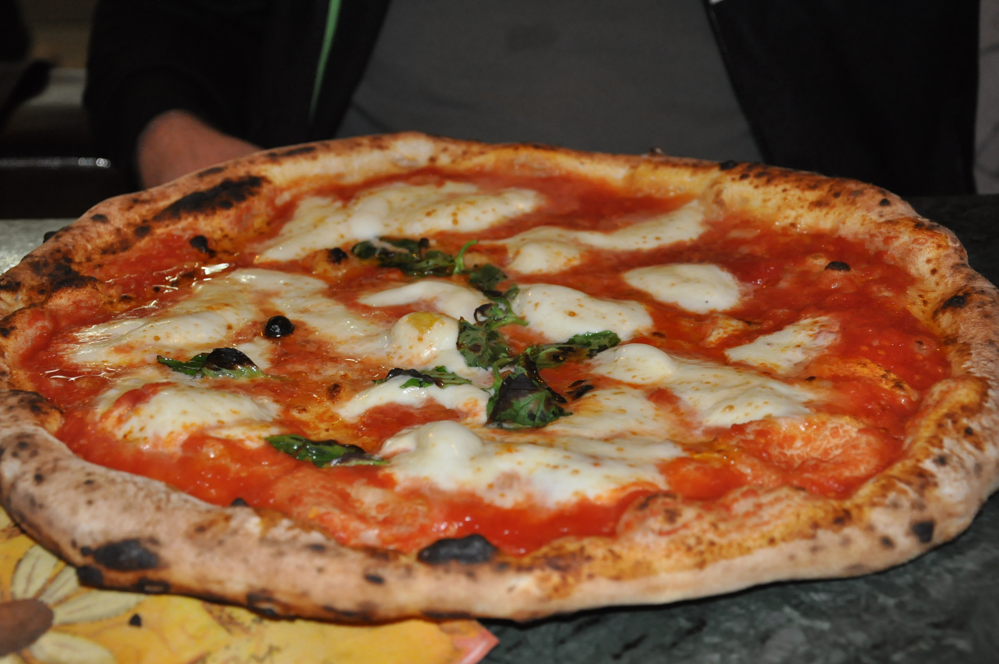
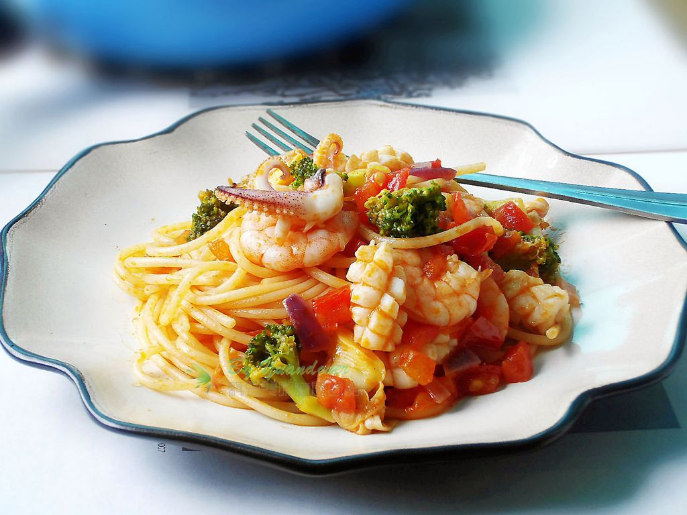

得天獨厚、物產豐饒的義大利，各個地區都有十分出色的料理
手打的義大利麵質地和醬料都是在其他國家很難複製的，
義大利的配餐酒在全球都有粉絲，
北義主要城市有米蘭、威尼斯、倫巴第、維洛那，北部除了手法國和瑞士飲食習慣影響，
也是青醬發源地，飲食以奶油為主，搭配多樣海鮮；中部是義大利的美食源頭，
主要城市有波隆那、托斯卡納地區，開始有甜醋和橄欖油作佐料，
知名的美食還有帕馬森乾酪和帕爾馬火腿，以美味的肉類制霸！
儘管在意大利統一之前就已經存在一塊帶有油和香料的大餅，
但也許沒有什麼菜像簡陋的比薩餅一樣普遍或代表該國。
長期以來，簡單、便宜且餡料豐富的比薩餅一直是意大利食品中常見的小吃或餐點，
尤其是在首先添加番茄醬的那不勒斯。
1889 年，意大利王后瑪格麗特 (Margherita) 遊覽她的王國時經過這座繁華的城市，
她要求嘗試這道菜，她看到許多臣民都吃過這道菜。
一位當地商人為他提供了現在具有傳奇色彩的番茄醬、馬蘇里拉奶酪和羅勒的組合，創造了瑪格麗特披薩。
無論是巧合還是設計，Margherita 還顯示了意大利國旗的顏色。
 
音樂AND影片
首頁中國宮廷美食介紹 韓國宮廷美食介紹 泰國宮廷美食介紹 心得